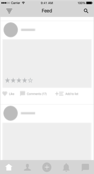

Wireframes
I began by skecthing and creating low-fidelity wireframes to define the interaction paths, navigational patterns and to test the concept with users. The wireframes went through a couple of rounds of iterations before they paved way for high-fidelity mock-ups



I ran a set of quick usability tests with people around me and some of the opportunities of improvement I learned are:
- Ability to subscribe to lists created by people apart from follwoing the people.
- Apply multiple interest filters instead of one.
- Privacy options for individual activity posts.